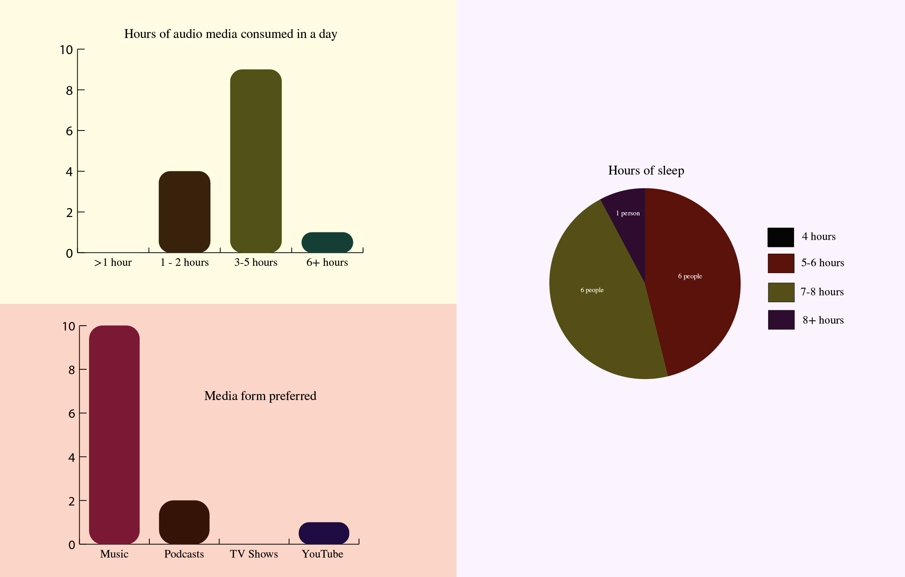

This is my homework 8.
I'm curious about the correlation of audio stimulation to overall wellness. Here, I asked my followers on Instagram about how much time they spend in a day consuming audio media, what form they prefer, and how much sleep they get. I am constantly stimulating myself, if not visually, then audibly. Constantly having music or a podcast going is very normal for most people, but I think that having a constantly stimulated brain can be harmful. I don't necessarily think my data proves that, as most of my followers actually get a really great amount of sleep. But still, it's something I'm curious about and considerate of.
 Home